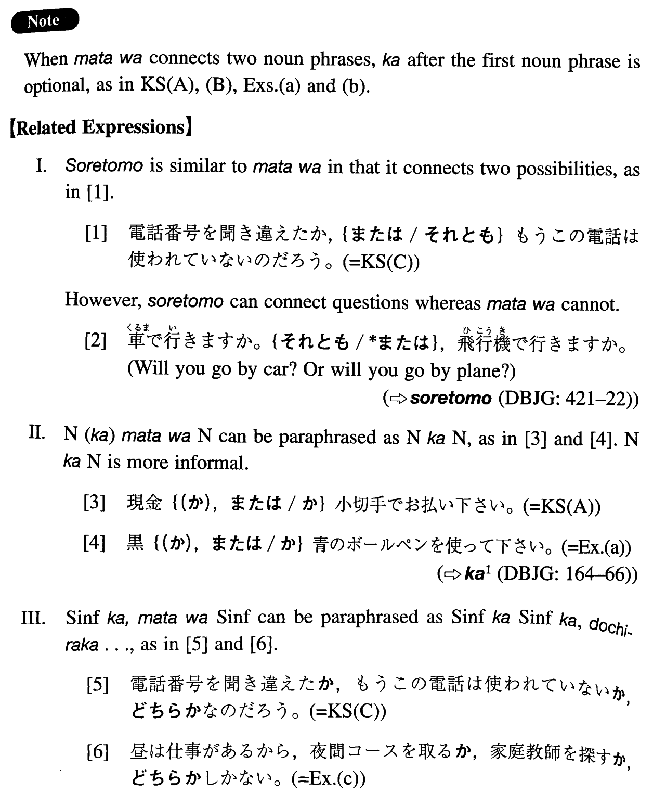

←
DoJG
→
または
(I. 171)
Example sentences
(ksa).
現金（か）、
または
小切手でお払い下さい。
Please pay either in cash or by check.
(ksb).
Ａ（か）、
または
Ｂのどちらかを選びなさい。
Select either A or B.
(ksc).
電話番号を聞き違えたか、
または
もうこの電話は使われていないのだろう。
I guess that either I misheard the phone number or this number (literally: phone) is no longer in use.
(a).
黒（か）、
または
青のボールペンを使って下さい。
Please use a black or blue ballpoint pen.
(b).
三年以下の懲役（か）、
または
百万円以下の罰金。
Imprisonment up to three years or a penalty up to one million yen.
(c).
昼は仕事があるから、夜間コースを取るか、
または
家庭教師を探すしかない。
I have to work during the day, so I have no choice but to take a night course or look for a tutor.
(d).
二週間前に出したはずの手紙がまだ先方に着いていない。私の秘書が出し忘れたか、
または
郵便局が間違えたのだろう。
A letter that I assumed was mailed two weeks ago has not reached the addressee yet. It is probably that my secretary forgot to mail it or that the post office made a mistake.
Formation
(i)
Noun (か)、
または
Noun
日本語(か)、
または
語英語
Either Japanese or English
(ii)
Sinformal か
または
Sinformal
手紙を書くか、
または
電話をする
Either write a letter or make a phone call
